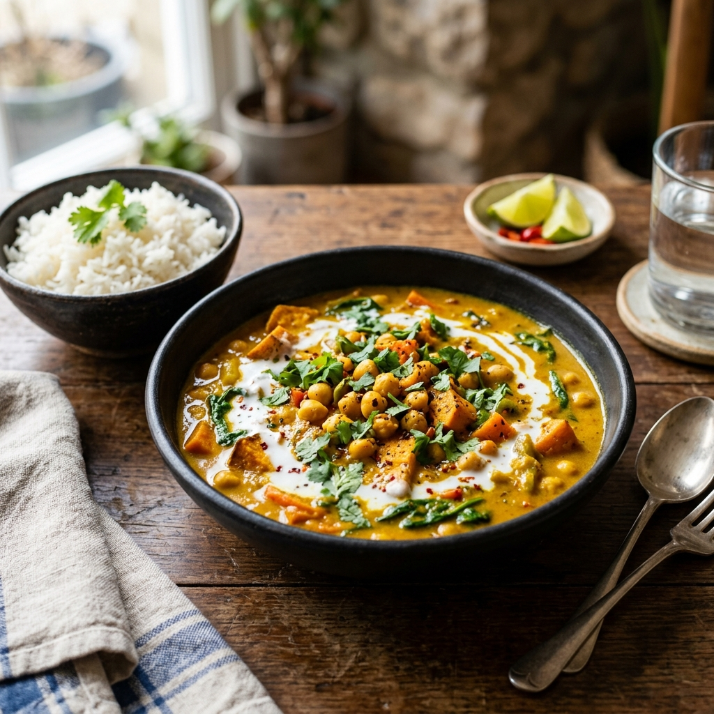

Description
A hearty, golden-hued curry loaded with chickpeas, sweet potato, and spinach in a fragrant coconut milk sauce. Warmly spiced and deeply satisfying — entirely plant-based and ready in under an hour.
Ingredients
- 2 tbsp coconut oil
- 1 onion, diced
- 4 cloves garlic, minced
- 1 tbsp fresh ginger, grated
- 2 tbsp curry powder
- 1 tsp turmeric
- 1/2 tsp cayenne pepper
- 1 large sweet potato, cubed
- 1 can (400g) chickpeas, drained
- 1 can (400ml) coconut milk
- 1 can (400g) diced tomatoes
- 3 cups baby spinach
- Juice of 1 lime
- Salt to taste
- Basmati rice and naan, to serve
Instructions
- Heat coconut oil in a large pot over medium heat. Add onion and cook for 5 minutes until softened.
- Add garlic and ginger; cook for 1 minute. Stir in curry powder, turmeric, and cayenne; cook for another minute until fragrant.
- Add sweet potato, chickpeas, coconut milk, and diced tomatoes. Stir to combine.
- Bring to a boil, then simmer for 20–25 minutes until the sweet potato is tender.
- Stir in spinach and cook until wilted, about 2 minutes.
- Season with lime juice and salt. Serve over basmati rice with warm naan.